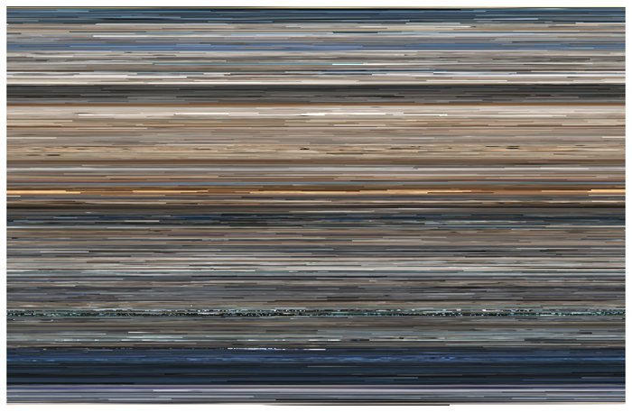

Beyond Visual Analytics - A Close Reading and Relfection
Despite the prolonged history of data and visualisations being associated with the statistical, scientific and even security and financial fields, the emergence of data and visualisations as art, has created a new academic field of interest and pursuit. This field presents definitional issues - paricularly as a form of art, but with regards to some results of data-driven art, ther is a clear overcoming of art and science barriers - especially with the consideration and inclusion of the audience.
With the definitonal issues proposed in previous attempts with regard to data-driven art, this paper clearly used and pursues the definiton of artistic visualisations as art based on actual data - a combination of the resultant image and the basis of data that it derives from. The image/art cannot exist or be defined as a data visualisation, without the approproate data backing. A second point raised is the diregard of the conventional standards of beauty or art as beauty. For the forms of art proposed to be data visualisations, there is a larger focus on the intent of the artistic visualisation, over the actual resultant visualisation. The emergence of such art, and the pursuit of data art is a result of two main contributing factors - the first being the inclusivity of emerging software tools that allow for more people to engage with data visualisations, and thereby the use of them artistically, and secondly, the increased intergration of data in cultural discourse on several levels outside of it's original associations (science, finance, security etc.).
The use of data in the artistic sense has opened up a new field that allows for the exploration and introduction to the wonders of data in a more audience catered sense. The use of data methods to create the visuals expressed display a new form of engagement with data that the genral public are not used to - and in doing so, open up the word of data and data processing procedures in a manner where the result - again, regardless of it's relation to the idea of beauty - displays the raw power and shear volume of data, wile also appealing outside the confines of graphing and tabulated results.
One of my favourite examples, as showcased in this reading of this, is the Top Grossing Film of All Time by Jason Salavon.
This data visualisation, based on data from the film, Titanic - in particular each frame, which was digitised and averaged to a single colour and then arranged accordingly in Western dominant format - there is a clear understanding and dipiction of the film in a more one-take sense that highlights the films lows, highs and even in the more pixilated parts, the climax of the film. This piece, to me, showcases the raw power of data and the ability of it to engage with an audience in a manner that tradiitonal expressions of data could not, and traditional artists could not either. The combination of data processes and artistc vision have created a new means of use for algorithms to incorprate the audience and the reach of data - as well as exemplifying the influence of data in various discourses with the progression of the digital era.
I believe that the true nature of data visualisations or artistic visualisations, serve as a means of showcasing the progression and importance of data, but also how this digitalization can serve to further areas that are considered more stoic and regressive - in this case, I am refering to the arts. This development of the crossing of fields shows that there is room for growth in the arts with the development and movement of technology and particular with the use of data. There is room to showcases more and sawcase more, newer and untouched avenues with the development of data - and with the definition supplied at hand, there is a change for true experimentation and deeper classification that can stem in the field if it pursued in the more artistic sense.
In the avenue of its stoic scientific nature, I think that artistic data visulisations are allowing for newer and better forms of data communication to audiences. There is a change to incorprate and showcase results and data in a manner that is more feasible to the general public. There is a movemnt away form the inaccessible nature of the fields that data is generally associated wiht, and an influc of understanding of not only the systems, but the use of the systems to the general public - basically, a new layer of transparency and inclusivity.
Holistically, I belive that artisitic visualisations are a means of showcasing the progression of both the scientific and artistic fields. The work done in each can now exist as a spectrum, and the integration of both aspects will allow for movement into a space where the art can be considered in the science, and the science in the art. Issues of inclusivity form both sides are addressed, new methods of creation and art pursuit are developed and there is a movement in the understanding of data - a word that is so commonly thrown around and used in discourse today but not clearly understood.
Artistic visualisations have the power to further both the art and science fields in a progressive and inclusionary manner, if they are given the space to do so, and self-define within the nations of both fields it stems from.
References
iégas, F. B. and Wattenberg, M. (2007) ‘Artistic Data Visualization: Beyond Visual Analytics’, in Schuler, D. (ed.) Online Communities and Social Computing. Berlin, Heidelberg: Springer Berlin Heidelberg (Lecture Notes in Computer Science), pp. 182–191. doi: 10.1007/978-3-540-73257-0_21.